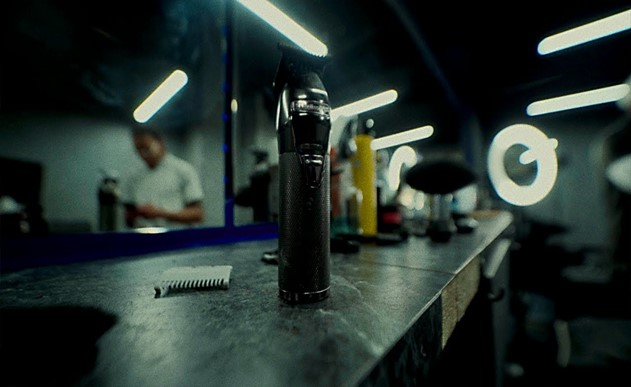

Budapest Cut, ahol a hagyományos borbélymesterség találkozik a modern stílussal
Ismerj meg minket!
A Budapest Cut története nem egy üzleti tervvel, hanem egy baráti beszélgetéssel kezdődött. 2019-ben jött egy ötlet az akkori munkatársaimmal, miközben a műszak végén a szakma jövőjéről álmodoztunk: mi lenne, ha nem mások szabályai szerint dolgoznánk, hanem nyitnánk egy saját üzletet? Egy olyan helyet, ahol a vendég nem csak egy sorszám, és ahol a borbélymesterség iránti alázat minden mozdulatban látszik.
Az ötletet tettek követték, és bár az indulás óta sok minden változott, az alapértékeink ugyanazok maradtak. Ma már büszkén mondhatjuk, hogy a nálunk dolgozó srácok Atyesz, Dávid és Balázs nemcsak kollégák, hanem egy olyan csapat, akik szívvel-lélekkel építik ezt a közösséget.

Nálunk a hagyományos borbélymesterség találkozik a modern stílussal, legyen szó egy klasszikus ollós vágásról vagy a legprecízebb skinfade-ről. Célunk, hogy amikor belépsz hozzánk, magad mögött hagyd a város zaját.
Itt nemcsak a hajadat és a szakálladat tesszük rendbe, hanem egy olyan élményt adunk, ami után felfrissülve és magabiztosan távozol. Gyere el hozzánk, ismerd meg a csapatot, és légy te is részese a Budapest Cut sztorijának!
Itt találsz meg minket!
Akár tömegközlekedéssel, akár autóval érkezel, könnyen ránk találsz. A legközelebbi metró- és villamosmegállótól mindössze pár perc séta választ el minket, így a reggeli munka előtti vagy a délutáni, zárás környéki időpontok is kényelmesen tarthatóak számodra. Ha autóval jössz, a környéken számos parkolási lehetőség áll rendelkezésedre, de érdemes pár perccel korábban érkezned, hogy biztosan legyen helyed a foglalásod kezdetére.
Nyitvatartás
| Nap | Nyitvatartás |
|---|---|
| Hétfő | 09:00 - 20:00 |
| Kedd | 09:00 - 20:00 |
| Szerda | 09:00 - 20:00 |
| Csütörtök | 09:00 - 20:00 |
| Péntek | 09:00 - 20:00 |
| Szombat | 09:00 - 16:00 |
| Vasárnap | Zárva |
Hétköznaponként reggel 09:00-tól egészen este 20:00-ig nyitva vagyunk, hogy a legelfoglaltabb üzletemberek és diákok is találjanak maguknak szabad sávot. Szombaton rövidített nyitvatartással, 09:00 és 16:00 között pörgetjük a székeket, a vasárnapot pedig mi is pihenéssel töltjük, hogy hétfőn újult erővel vágjuk a legmenőbb sérókat.
Nézz be hozzánk, dobd le a kabátod, és hagyd, hogy Atyesz, Dávid vagy Balázs kezelésbe vegyen!
Borbélyaink!
Visszajelzések alapján
-ra értékelve!
Gergő
"Atyesz profi, a séróm pedig tízpontos. Ez a kedvenc helyem a városban!"
András
"Dávid vágta a skinfade-emet, brutál precíz lett. Szuper a hangulat is! Balázs érti a dolgát, a szakállam végre úgy néz ki, ahogy akartam. Ajánlom!"
Peti
"Végre egy hely, ahol nem futószalagon vágnak. Atyesz figyel minden részletre, a kávé pedig külön plusz pont!"
István
"Dávid kezében a gép varázsol, a skinfade átmenetem még sosem volt ilyen éles. Maximális elégedettség"